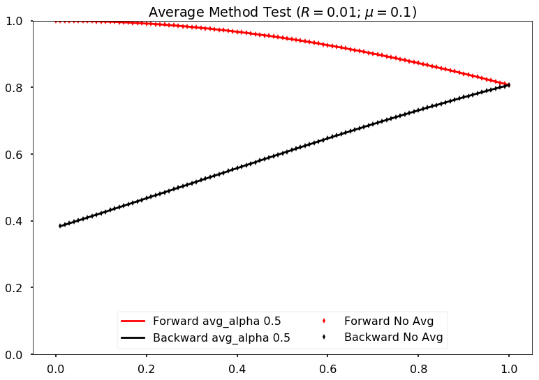
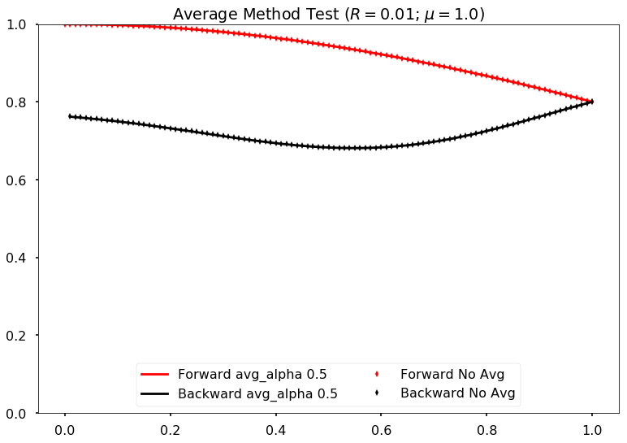
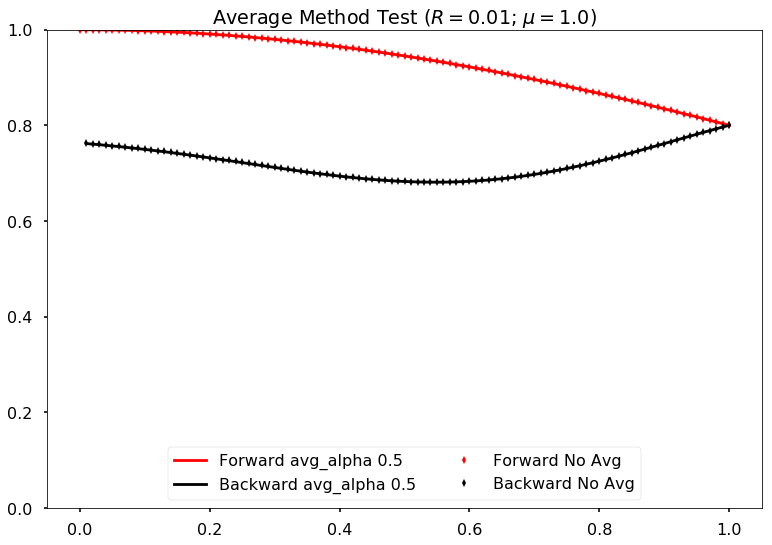

3.2. Halo Effect - Finite Difference¶
3.2.1. Models¶
3.2.1.1. Toy Model¶
The toy model we use is neutrino-only, right forward beam and reflection.
For single angle neutrino-only emission, this model can also work for the tilted emission simply by rescale the neutrino self-interaction by \(\cos\alpha\) where \(\alpha\) the angle of forward and backward beams.
Some Seasoning
- [ ] Add in anti-neutrinos to the beams
- [ ] Neutrino and anti-neutrino beams are in different directions
3.2.1.2. Model with Collective Oscillations¶
Introduce multiangles and left-right asymmetries to the system.
3.2.2. Numerical - State Convention¶
We use traceless density matrix. There are two senarios to keep track of the elements.
3.2.2.1. Convention Used in Code¶
For any tracelesstwo by two matrix with real diagonal elements such as density matrix,
we define a corresponding array s = { a, b ,c }. Then the density matrix is
3.2.2.2. Polarization Vector¶
Polarization vector \(\vec P\) is
so that vec P = { b, -c , a }.
Relation to My Convention
It is related to my convention by
P[0] = s[1]
P[1] = -s[2]
P[2] = s[0]
3.2.3. Numerical - Stepper Senario¶
3.2.3.1. Euler Method¶
We start from the equation of motion
where we denote
Calcuation of the commutator shows that
from which we conclude that
Then we discretize each equations using Euler method.
3.2.3.2. Evolution Operator¶
The same calculation can be achieved by using the evolution operator \(U(t) = \exp (-i H t)\).
Evolution Operator
Evolution operator \(U(t)\) is used to evolve states
if Hamiltonian doesn’t depend on time.
As a numerical algorithm, we can use the finite difference form
Since the Hamiltonian in our simple calcuations is always two by two, the exact form of the algorithm can be written down exactly.
The evolution operator itself is
where we defined \(h = \sqrt{ h0^2+h1^2+h_2^2 }\) for short.
To obtain a simpler form, we can write all matrices as Pauli matrices.
For the purpose of formalism, we denote density matrix as \(\rho = P_i \sigma_i\). The density matrix at \(t+\Delta t\) is
where \(c=\cos( h \Delta t )\), \(s = \sin(h\Delta t)\), \(u_{1,3} =-i h_{1,3}/h\), \(u_2 = i h_2/h\), and \(h=\sqrt{h_1^2 + h_2^2 + h_3^2}\). The equation is simplified if we redefine
Then we obtain the equation
The Code
The vectors about h is consistent with my code. But the state vector I calculated is different. The actual update rule should be
The Tedious Result Using Mathematica
The evolved density matrix obtained quite a long expression but it definitely can be implemented.
First Order Expansion
We could Taylor series of the evolution operator,
We work out the evolved density matrix.
3.2.4. Numerical - Iteration Senario¶
3.2.4.1. Single Neutrino Forward then Backward¶
Algrimth
- Calculate forward beam using 0 backward beam;
- Calculate backward beam using forward beam calculated in 1;
- Calculate forward beam using backward beam calculated in 2;
- Repeat.
3.2.4.2. Single Neutrino Simultaneous¶
Algrimth
- Calculate forward beam using 0 backward beam;
- Calculate backward beam and forward beam together using all current counter beams;
- Repeat.
Computation Time
2017-09-13:
The export of my test code:
PROGRAM START
Halo Problem Forward and Backward:
Total number of iterations: 100
Size of rhos: 1000
Range: 1.000000
Step size: 0.001000
Save Steps: 2
Total clock time: 0.070386
Clock time for 1000 iterations: 0.70409
PROGRAM END
Some estimations:
- (1e5 steps in z) times (10000) steps requires (10000 times 7e-4 times 100 = 700) seconds;
- (1e6 steps in z) times (10000) steps requires (10000 times 7e-4 times 1000 = 7000 ) seconds, i.e., 117 minutes;
- (1e7 steps in z) times (10000) steps requires (10000 times 7e-4 times 10000 = 70000 ) seconds, i.e., 1e3 minutes.
2017-09-14: I changed the Hamiltonian functions and solvers.
PROGRAM START
Halo Problem Forward and Backward:
Total number of iterations: 100
Size of rhos: 1000
Range: 1.000000
Step size: 0.001000
Save Steps: 2
Total clock time: 0.018305
Clock time for 1000 iterations: 0.18335
PROGRAM END
3.5 times faster!
The result shows that
For 20000 total iteractions. Calculation is within range 0 to 1 with step size 1e-5. A total of 100 steps are exported. So each step indicates iteration of 200 times.
GIF: Step size \(10^{-5}\)

Fig. 3.7 For 20000 iteractions within range 0 to 1 with 100 outputs. Each time increment in the plot indicates 200 iterations.
We immediately spot trouble here. The calculation doesn’t reach equilibrium. I calculated using larger iterations (100000 iterations) and it doesn’t converge either.
I checked the convergence.
Comparing step size 1e-4 and 1e-5, with Ntop = 20000 total iterations and 20 outputs. Each time increment in the plot indicates 20000/20=1000 iterations.
Compare step sizes \(10^{-5}\) and \(10^{-6}\).
Comparing step size 1e-6 and 1e-5, with Ntop = 20000 total iterations and 20 outputs. Each time increment in the plot indicates 20000/20=1000 iterations.
What to do?
The first thing to do is to optimize the code and check the performance of this code. It might need more time, otherwise this would be physically important. We have to solve the time dependent problem by tracking all the neutrinos.
- Parallelize the code.
- Read about what the mathematicians are using to solve BVP with nonlocal boundary conditions. Refer to BVP nonlocal BC.
- Try to calculate multiangles to check if the convergence is easier to reach. What are the conditions of equilibrium?
- Write the time dependent code, with tracks all the neutrinos at different locations and solve it. This would be the actual time evolution of the flavors. The time scale would be on ms. Will this be useful?
TODO
- Linear stability analysis.
3.2.5. Verify Results¶
The equilibrium results can be verified using Mathematica solver. I simply feed in the initial conditions at \(z=0\) and calculate forward to the reflection surace at \(z=L\). The two neutrino beams should be at the same state.
Result is verified using Mathematica code.

Fig. 3.8 C++ code validation using mathematica for \(\mu=20\).
3.2.6. Damping in Time¶
The Problem
The problem I encountered is that some of the calculations show that approaching to equilibrium can be extremely slow due to some kind of oscillation behavior.
The system is kind of oscillatory in time. Reflection coefficient refl=0.2, mu = 1.0, within z range [0,5].
Average the past two steps to slow down the time evolution. Maybe it can prevent the oscillations in time.
The average algorithm takes on parameter \(\alpha\),
I can verify that the code is producing the correct results by setting \(\alpha=0\) and compare the result with my previous code. They are producing exact the same results.
Comparing damping method with alpha=0 (effectively no damping) and original code (without damping) for neutrino potential mu =0.1 and reflection coefficient refl=0.01
I also verified that the final equilibrium states produced by new code with damping and the original code without damping are the same.
{kind=link}
 

{kind=link}

However, the new algoritm seems to be slow. It’s expected though.
Comparing damping method with alpha=0.5 and no damping for neutrino potential mu =0.1 and reflection coefficient refl=0.1
Comparing damping method with alpha=0.5 and no damping for neutrino potential mu =0.1 and reflection coefficient refl=0.01
Comparing damping method with alpha=0.5 and no damping for neutrino potential mu =1.0 and reflection coefficient refl=0.1
Comparing damping method with alpha=0.5 and no damping for neutrino potential mu =1.0 and reflection coefficient refl=0.01
To make use of this new damping mechanism, I need to recalculate
`
refl = 0.2
mu = 1.0
range = 5
`
3.2.7. Varying Parameters¶

Fig. 3.9 Fix \(\mu=1\)

Fig. 3.10 Fix \(\mu=0.5\)

Fig. 3.11 Fix \(\mu=0.1\)